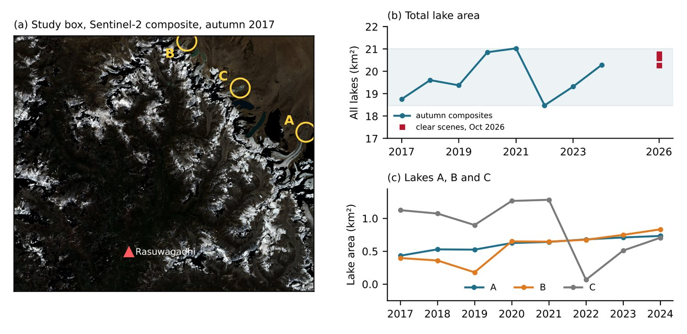
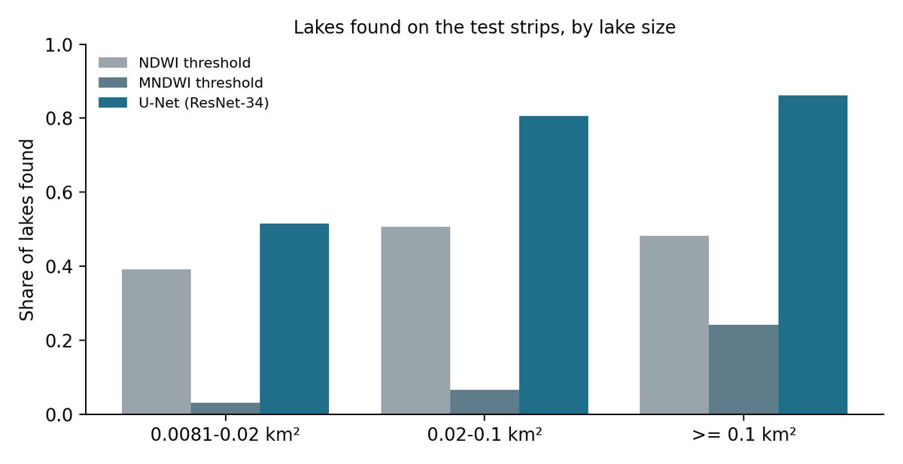

Mapping glacial lakes in the Himalaya with Sentinel-2
Computer vision for satellite images, with a case study of the 2025 and 2026 Bhotekoshi floods
Floods came down the Lende river into the Bhotekoshi at Rasuwagadhi on 8 July 2025 and again on 26 August 2026, both with almost no warning. I trained a U-Net to find glacial lakes in free Sentinel-2 images, tested it on parts of the Himalaya it never saw, and then pointed it at the valley that flooded.
- Labels from the hand-checked Hi-MAG inventory; training, validation and test tiles from separate longitude strips.
- Compared with NDWI and MNDWI thresholds tuned on the same training data.
- Followed every lake above Rasuwagadhi from 2017 to 2024, and checked each clear image around both floods.
| Method | Pixel IoU (95% CI) | Lakes found |
|---|---|---|
| NDWI threshold | 0.490 (0.41–0.57) | 45.9% |
| MNDWI threshold | 0.039 (0.02–0.08) | 8.2% |
| U-Net (ResNet-34) | 0.669 (0.58–0.74) | 70.6% |
In the flood area the model gives stable outlines for the large lakes over eight years and finds one lake that grew every year, from 0.43 to 0.73 km². The main lesson is about clouds, not the classifier: there was no clear optical image for seven weeks around the 2026 flood, so warnings will need radar.

